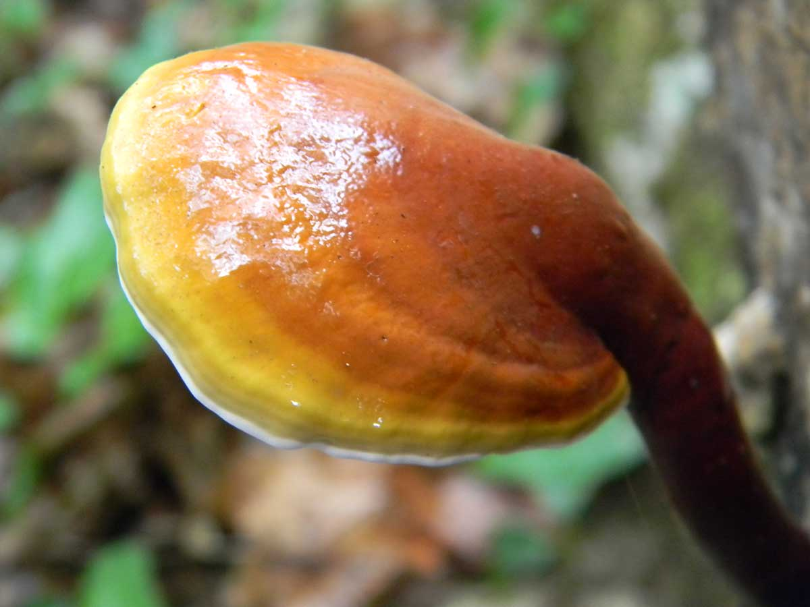

O gênero Ganoderma compreende fungos poroides pertencentes à família Ganodermataceae (Basidiomycota). Seus representantes apresentam basidiomas geralmente resistentes, com consistência coriácea a lenhosa, sendo frequentemente encontrados associados à madeira, onde desempenham importante papel na decomposição da matéria orgânica.
Explore o modelo tridimensional
Arraste para rotacionar, aproxime para observar os detalhes ou utilize a opção de Realidade Aumentada.